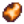

Головные уборы
Головные уборы — косметические предметы, которые изменяют внешний вид игрока, но не дают никаких эффектов. Головной убор можно надеть на лошадь и ребенка (когда он начнет ходить). Чтобы снять, выберите другую шляпу в инвентаре и нажмите на лошадь / ребенка.
После получения первого достижения игрок получит письмо от мыши из разрушенного дома, в котором говорится, что шляпы теперь можно купить у неё.
Большинство достижений разблокируют новую шляпу, которую затем можно приобрести за  1000 з. каждую.
Некоторые шляпы можно получить только на праздниках, в казино, в гильдии искателей приключений, у менялы, у странствующего торговца или в сокровищницах в пещере черепа.
1000 з. каждую.
Некоторые шляпы можно получить только на праздниках, в казино, в гильдии искателей приключений, у менялы, у странствующего торговца или в сокровищницах в пещере черепа.
Шляпы также можно сшить на швейной машинке в доме Эмили.
Шляпы нельзя продать ни через ящик для отгрузок, ни обратно мыши, ни в любой другой магазин в игре.
Список головных уборов
| Вид | Название | Описание | Достижение | Способ получения |
|---|---|---|---|---|
 |
Ковбойская шляпа | Кожа старая и потрескавшаяся, но удивительно гибкая. От нее пахнет. | Полная коллекция | Завершить коллекцию музейных экспонатов. |
 |
Котелок | Сделан из гладкого фетра. | Миллионер | Заработать |
 |
Цилиндр | Джентльменская классика. | Купить за | |
| Сомбреро | Ярко украшенная шляпа из соломы. | Легенда | Заработать | |
 |
Соломенная шляпа | Легкая и продуваемая, фермеры ее обожают. | Победите в охоте за яйцами во время яичного фестиваля. | |
 |
Кепка от униформы | Похоже, она принадлежала почтальону или полицейскому. В любом случае, пахнет от нее неплохо. | Старый мореход | Поймать 24 разных вида рыб. |
 |
Голубой чепчик | Этот чепчик из прерий вернет вас в прошлое. | Сокровищница | Отдать в музей 40 различных предметов. |
 |
Сливовая шляпа | Выглядит вполне неплохо. | Су-шеф | Приготовить 25 разных блюд. |
 |
Маска скелета | Ее глаза светятся таинственным красным огнем. | Гильдия искателей приключений (Истребите 50 скелетов). | |
| Маска гоблина | Напугайте своих соседей этой жуткой маской. Резиновые уши усилят эффект. | Мастер-груз | Отправить на рынок каждый из доступных предметов. | |
 |
Маска курицы | От нее всем станет смешно. | Добрая душа | Выполнить 40 поручений с доски объявлений. |
 |
Теплые наушники | Держите уши в тепле. Обшиты бархатом мастерской работы из деревни Касл. | Популярность | Достигнуть уровня дружбы в 5 сердечек с 20-ю людьми. |
 |
Изящный бант | Вы видите, как на нем блестят розовые камушки. | Повар | Приготовить 10 разных блюд. |
 |
Тропиклипс | В форме пальмы. | Заживeм! | Расширить свой дом. |
 |
Бант-бабочка | Он очень мягкий. | Новый друг | Достигнуть уровня дружбы в 5 сердечек с кем-либо. |
 |
Охотничья шляпа | Шерстяная подкладка согреет в самом глухом лесу. | Красивая жизнь | Расширить свой дом до максимального размера. |
 |
Бейсболка | Сеточка сзади дает прохладу. | Умелец | Смастерить 30 разных предметов. |
 |
Бескозырка | Она чистая и накрахмаленная. | Ледовый праздник (Выиграйте соревнование по подледному лову). | |
 |
Старая добрая кепка | Старая мягкая кепка с мятым козырьком. Похоже, она многое повидала. | Новичок | Заработать |
 |
Фетровая шляпа | Классика городского пижонства. | Приобрести за | |
 |
Крутая кепка | Она сильно выгорела, но когда-то была ярко-голубой. | Поселенец | Заработать |
 |
Счастливый бант | Середина выполнена из чистого золота. | Ковбой | Заработать |
 |
Бант в горошек | Он никого не оставит равнодушным. | Курьер | Выполнить 10 поручений с доски объявлений. |
 |
Шапка гнома | У этого гнома была очень большая голова. | Мастер | Смастерить каждый из предметов. |
 |
Глазная повязка | Непонятно, настоящая она или маскарадная. | Мастер рыбной ловли | Поймать каждый из видов рыб. |
 |
Шляпа Санты | Порадуйтесь этому волшебному времени года. | Связи | Достигнуть уровня дружбы в 5 сердечек с 10-ю людьми. |
 |
Диадема | Она вся из золота, а посередине - большой аметист. | Потому что мы - банда! | Достигнуть уровня дружбы в 5 сердечек с 4-мя людьми. |
 |
Каска | Берегите голову! | Гильдия искателей приключений (Истребить 30 копашек). | |
 |
Зюйдвестка | Благодаря ее форме моряки остаются сухими в бурю. | Рыболов | Поймать 10 разных видов рыб. |
 |
Маргаритка | Свежая весенняя маргаритка, ее можно заплести в волосы. | Сделай сам | Смастерить 15 разных предметов. |
| Арбузный ободок | Арбуз послужил вдохновением для цветов этого ободка. | Славный улов | Поймать 100 рыб. | |
 |
Мышиные ушки | Они сделаны из искусственного волокна. | Лучшие друзья | Достигнуть уровня дружбы в 10 сердечек с кем-либо. |
 |
Кошачьи ушки | Усы прилагаются. | Наш любимый фермер | Достигнуть уровня дружбы в 10 сердечек с 8-ю людьми. |
 |
Шляпа девушки-ковбоя | Лента украшена искусственными бриллиантами. | Монокультура | Отправить на рынок 300 ед. урожая от одной культуры. |
 |
Шляпа погонщика | Для молочных экспертов. | Севооборот | Отправить на рынок по 15 единиц урожая от каждой культуры. |
 |
Шляпа лучника | Очень модно, вне зависимости от того, лучник вы или нет. | Шеф-повар | Приготовить каждое из блюд. |
 |
Panda Hat | A lovеly panda hat. | WeGame [1] эксклюзивный контент; невозможно получить | |
| Синяя ковбойская шляпа | Синяя джинсовая ковбойская шляпа. | Сундук с сокровищами в пещере черепа. | ||
| Красная ковбойская шляпа | Ярко-красная замшевая шляпа. | Сундук с сокровищами в пещере черепа. | ||
| Коническая шляпа | Диковинка из далеких земель. | Купить во время ночного рынка в волшебном магазине на лодке. | ||
 |
Живая шляпа | Собирает живительную влагу с вашей головы. Можно не поливать! |
| |
 |
Волшебная шляпа Эмили | Эмили сделала ее с любовью. Она 100% натуральная! | Эмили 14 сердечек | |
 |
Грибная шляпка | Пахнет землей. | 1% шанс получить срубая грибное дерево | |
 |
Шляпа-динозавр | Шляпа в форме динозаврика. | Пошив одежды | |
 |
Тотемная маска | Не переживайте, она не перекосит ваше лицо... | Пошив одежды | |
| Кепка с логотипом | Красная кепка с логотипом спереди. | Пошив одежды | ||
 |
Носибельный шлем дварфов | Шлем дварфов большего размера, который может носить человек. | Пошив одежды | |
 |
Модная шляпа | Модная шляпа с пером. | Пошив одежды | |
 |
Тыквенная маска | Наверное, раньше это была довольно большая тыква... | Пошив одежды | |
 |
Кость в волосах | Доисторическая версия бантика для волос. | Пошив одежды | |
 |
Рыцарский шлем | Выглядит совсем как настоящий! | Гильдия искателей приключений (Истребите 50 перечных динозавров). | |
 |
Шлем сквайра | Лицо не закрыто, чтобы обеспечить циркуляцию воздуха. | Случайная добыча из металлоголового | |
 |
Пестрая косынка | Красная косынка с узором в горошек. | Пошив одежды | |
 |
Вязаная шапочка | Плотно сидящая теплая шапка. | Пошив одежды | |
 |
Разношенная вязаная шапочка | Менее плотно сидящая теплая шапка. | Пошив одежды | |
 |
Рыбацкая шляпа | Шляпа с широкими полями для защиты от солнца во время рыбалки. | Пошив одежды | |
 |
Маска рыбы-пузыря | Такая же упругая, как и настоящя рыба! | Пошив одежды | |
.png) |
Шляпа тусовщика | Глупая красная шляпа, с которой любая вечеринка становится веселее. | Пошив одежды | |
.png) |
Шляпа тусовщика | Глупая синяя шляпа, с которой любая вечеринка становится веселее. | Пошив одежды | |
.png) |
Шляпа тусовщика | Глупая зеленая шляпа, с которой любая вечеринка становится веселее. | Пошив одежды | |
 |
Таинственная шляпа | Ковбойская шляпа для волшебников. | Гильдия искателей приключений (Истребите 100 мумий). | |
 |
Поварской колпак | Традицонный головной убор шеф-повара. | Шеф-повар | Приготовить каждое из блюд. |
 |
Пиратская шляпа | Капитанская шляпа с ужасным черепом спереди. | Пошив одежды | |
 |
Канотье | Старинная шляпа, которая раньше считалась последним писком моды. | Пошив одежды | |
 |
Элегантный тюрбан | Изящный тюрбан из черного шелка с золотым обрамлением. | Заработайте все достижения. | |
 |
Белый тюрбан | Изящный тюрбан из черного шелка с золотым обрамлением. |
| |
 |
Мусорная шляпа | Крышка мусорного бака, «переработанная» под шляпу... | 0.2% шанс найти когда шаритесь по мусорным бакам (только после первых 20 баков) | |
.png) |
Золотая маска | Точная копия реликвии из пустыни Калико! | Пошив одежды | |
 |
Шляпа с пропеллером | Глупая шляпа с пропеллером наверху. | Пошив одежды | |
 |
Свадебная фата | Традиционный головной убор невесты. | Пошив одежды | |
 |
Шляпа ведьмы | Популярная у ведьм остроконечная шляпа. | Пошив одежды | |
.png) |
Медная сковорода | Вы надеваете медный ковш себе на голову... | Поместите медный промывочный ковш в слот для головного убора в меню персонажа | |
 |
Зеленый тюрбан | Изящный тюрбан из зеленого шелка с золотым обрамлением. | Продает меняла | |
 |
Волшебная ковбойская шляпа | Головной убор, испускающий призматическую энергию. | Продает меняла, в нечетные дни | |
 |
Волшебный тюрбан | Головной убор, испускающий призматическую энергию. | Продает меняла, в четные дни | |
 |
Золотой шлем | Половинка золотого кокоса. | Золотой кокос (5% при вскрытии) | |
 |
Элитная пиратская шляпа | Только самые знаменитые пираты могли позволить себе так наряжаться. | Сундуки в подземелье вулкана | |
 |
Розовый бант | Этот огромный бант говорит сам за себя! | Можно купить у дварфа в подземелье вулкана | |
 |
Лягушачья шляпа | Склизкий друг, сидящий у вас на кумполе. | Можно выловить в пещере Лягушки-гурмана на Имбирном острове | |
 |
Кепочка | Более аэродинамичная версия обычной кепки. | Островной торговец по понедельникам в обмен на 30 корней таро. | |
| Спортивная кепка | Винтажная кепка с логотипом спортивной команды. | Можно получить из призового автомата в усадьбе мэра. | ||
 |
Маска сиалии | Носите эту маску, чтобы выглядеть как ваш любимый торговец на этом острове. | Островной торговец по средам в обмен на 30 корней таро. | |
 |
Элитная ковбойская шляпа | Ковбойская шляпа на пределе стиля. | Островной торговец по пятницам в обмен на 30 корней таро. | |
 |
Шляпа Мистера Ки | Копия легендарной шляпы Мистера Ки. | Ореховая комната Мистера Ки за 5 камней Ки | |
 |
Темная ковбойская шляпа | Ковбойская шляпа в модном черном цвете. | Можно случайно найти в сундуках в Пещеры Черепа | |
 |
Радиоактивные гоглы | На самом деле совсем не защищают от радиации. | Пошив одежды | |
| Шляпа головореза | Классический бандитский прикид. | Пошив одежды | ||
 |
Маска Ки | ??? | Пошив одежды | |
 |
Звездный шлем | Красная шапка со звездами. | Пошив одежды | |
 |
Солнечные очки | В них вы выглядите расслабленным. | Пошив одежды | |
 |
Гоглы | Они защитят твои глаза и придадут вам ауру защищенности. | Пошив одежды | |
 |
Шляпа собирателя | Отрада собирателя. | Пошив одежды | |
 |
Тигриная шляпа | В ней вы похожи на прекрасного тигра. | Случайно падает с убитых тигровых слаймов | |
 |
Шлем воина | Скорлупа страусиного яйца, теперь служащая в качестве шлема. | Пошив одежды | |
 |
??? | Нажмите на обезьяну в жерле вулкана после того, как достигните 100% Совершенства. | ||
| Бант Абигейл | Прямо как у Эбби. | Покупается за  60 в магазине Абигейл на Пустынном фестивале. | ||
| Треуголка | Традиционный головной убор морских офицеров. | Покупается за 100 в магазине Эллиота на Пустынном фестивале. | ||
| Кепка Джоджа | Официальная кепка Джоджа. Из 100% полиэстера. | Случайно получить в палатке Эмили на Пустынном фестивале. | ||
| Лавровый венок | Венок из листьев в виде красивой короны. | Случайно дается в палатке Эмили на Пустынном фестивале. | ||
 |
Шляпа Гила | Та же шляпа, что и у Гила. | Шляпу даст Гил после достижения рейтинга яиц 25-54 на Пустынном фестивале. | |
 |
Голубой бант | Этот огромный бант говорит сам за себя! | Покупается за 50 у тогровца на Пустынном фестивале. | |
 |
Темный бархатный бант | Большой висячий бант из темного бархата. | Покупается за 75 у тогровца на Пустынном фестивале. | |
| Маска мумии | Большая маска мумии... Страшно-то как! | Покупается за 120 у тогровца на Пустынном фестивале. | ||
| Панама | Простой головной убор с короткими полями. | Выдается в награду на Форелевом турнире. | ||
| Шапка-кальмар | Шанс походить с кальмаром на голове. | Выдается в награду на Кальмарофесте. | ||
| Спортивная кепка | Винтажная кепка с логотипом спортивной команды. | Выдается из призового автомата в Усадьбе мэра. | ||
| Красная феска | Уникальный головной убор, который носит свинья одного торговца. | Покупается за | ||
| Енотовая шапка | Классическая шапка времен фронтира. | Выдается за выполнение третьего запроса енота. | ||
| Стальной ковш (шляпа) | Вы надеваете стальной ковш себе на голову... | Перемещение стального промывочного ковша в слот для головного убора в инвентаре. | ||
| Золотой ковш (шляпа) | Вы надеваете золотой ковш себе на голову... | Перемещение золотого промывочного ковша в слот для головного убора в инвентаре. | ||
| Иридиевый ковш (шляпа) | Вы надеваете иридиевый ковш себе на голову... | Перемещение иридиевого промывочного ковша в слот для головного убора в инвентаре. | ||
| Загадочная шляпа | Сделана из кусков Загадочной коробки. | Загадочные коробки или Золотые загадочные коробки. | ||
| Темная бейсболка | Прекрасно вам подходит. | Случайно дается в палатке Эмили на Пустынном фестивале. | ||
| Шляпа лепрекона | Предыдущий владелец, видать, потерял голову от лепреконов. | 17 числа весны может быть получена у водопада рядом с заброшенным домом в Пепельносмольном лесу из горшка с золотом. | ||
| Шапка Джунимо | В честь наших маленьких друзей... | Совершенство | Достигнуть вершины. | |
| Бумажная шляпа | Сделана из особой бумаги, которая не промокает в дождь. | Далекий берег | Добраться до Имбирного острова. | |
| Кепка газетчика | По какой-то причине в ней вам хочется разносить газеты. | Книжный червь | Прочесть все книги. | |
| Шутовской колпак | Покажите всем вашего внутреннего клоуна. | Два пальца вверх | Посмотреть кино. | |
| Голубая лента | Милая лента для хвостика или пучка. | Голубая лента | Занять первое место на Ярмарке долины Стардью. | |
| Шляпа губернатора | Копия легендарной шляпы губернатора. | Незабываемый суп | Порадовать губернатора. | |
| Белый бант | Бант белее снега. | Добрые соседи | Помочь своим лесным соседям вырастить семью. | |
| Шлем космонавта | Внимание: этот шлем не тестировался в открытом космосе. | Опасные глубины | Спуститься на дно «опасных» шахт. | |
| Корона Бесконечности | Сделана из экзотического, неизвестного вам ранее металла. | Безудержная сила | Заполучить самое мощное оружие. |
Разное
- Игроки могут надеть головной убор на редкое пугало #3 (инопланетянин). Это единственный игровой объект (кроме лошади, кошки, собаки и детей), на который можно надеть шляпу.
Примечания
История
- 1.3: Добавлено 3 новые шляпы: синяя ковбойская шляпа, красная ковбойская шляпа и коническая шляпа. Теперь шляпы можно надевать на лошадей.
- 1.4: Добавлено 35 новых шляп. Теперь можно надевать шляпы на детей. Добавлена возможность снимать шляпы с лошадей и детей.
- 1.5: Добавлено 19 новых шляп. Теперь можно надевать шляпы на морских ежей в аквариумах.
- 1.6: Добавлено 28 новых шляп. Теперь можно надевать шляпы на кошек и собак. Некоторые шляпы могут быть получены игроком в результате определённых действий (аналогично живой шляпе). Цена на большинство шляп, продаваемых шляпным мышем в заброшенном доме возросла.